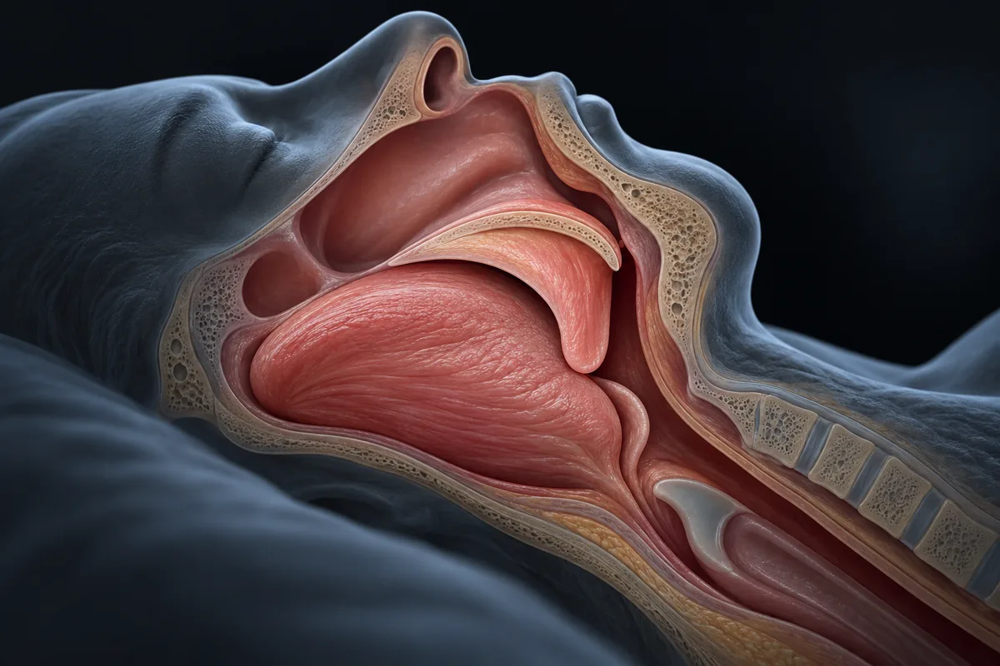

Ronco e apneia obstrutiva do sono (testosterona, CPAP e perda de peso)
Homens com apneia têm testosterona mais baixa, e o CPAP sozinho não a sobe nas meta-análises. Mas o CPAP trata a apneia; somar perda de peso subiu a testosterona em 77,6 ng/dL.

Material experimental. Leia antes de usar qualquer coisa daqui.
Nada nesta página é recomendação médica, prescrição ou plano de tratamento. É uma tradução organizada de protocolos que circulam em comunidades de pesquisa e, quando existe, do que ensaios publicados testaram. As duas coisas estão marcadas de forma diferente — e não são equivalentes.
A maior parte dos compostos aqui não tem aprovação da ANVISA nem da FDA para uso humano. Vários são vendidos com rótulo de "uso exclusivo em pesquisa", o que significa que não passaram por controle de pureza, esterilidade ou dosagem para consumo por pessoas. Dose descrita por comunidade não é dose validada: é o que alguém relatou ter feito.
Converse com um profissional de saúde habilitado antes de considerar qualquer um destes compostos. Se você já usa algum e sentir algo fora do previsto, procure atendimento — não espere o próximo exame de rotina.
Resumo
Apneia obstrutiva do sono é a garganta que fecha repetidas vezes durante o sono. Em São Paulo, 32,8% dos adultos examinados tinham a síndrome, e o excesso de peso foi o fator mais forte. Duas meta-análises acham testosterona mais baixa em homens com apneia, também depois de ajustar por idade e peso, sobretudo na apneia grave. O vídeo acerta num ponto: nas meta-análises, o CPAP sozinho não mudou a testosterona. Erra no resto: o CPAP não é oxigênio, trata a apneia, reduz sonolência e ronco e é recomendado pelas diretrizes. Num ensaio com 89 homens já em CPAP, somar 8 semanas de perda de peso e mudança de hábitos subiu a testosterona e tirou 45% deles do aparelho. A tirzepatida reduziu o índice de apneia em 20 a 24 eventos por hora a mais que o placebo e foi aprovada para isso nos EUA e no Brasil.
Por que esta página existe
O ronco aparece descrito em vídeos curtos sobre saúde masculina que vi publicados na internet, como a testosterona "sendo triturada" durante o sono. O roteiro é este: um estudo publicado em 2002 no Journal of Clinical Endocrinology teria provado que a apneia obstrutiva do sono "derruba a testosterona direto pro chão", e quanto mais a pessoa engasga e ronca, menos hormônio produz; a garganta fecha por três motivos, gordura acumulada no pescoço, sedentarismo que "afrouxa" a musculatura da faringe e desvio de septo; o cérebro entra em pânico, dá microdespertares e "bloqueia as fases profundas" em que a testosterona seria fabricada. Aí vem o ponto central: a "máscara de oxigênio" que o médico receita "só empurra ar forçado", e "o estudo já provou" que o aparelho isolado não recupera a via hormonal se a pessoa não "limpar a raiz mecânica". A solução seria um protocolo pago para subir a testosterona "em até 147% em 28 dias" e ganhar "de 1 a 7 centímetros".
Esta página confronta essas alegações com as diretrizes e os ensaios de tratamento: CPAP, perda de peso, tirzepatida, aparelho intraoral, cirurgia e exercício. Ela não repete o que já está nas páginas sobre a tirzepatida em geral (ver a página tirzepatida-mounjaro) e sobre sono e testosterona (ver a página sono-higiene-e-gh).
Levantei as alegações de 1 vídeo curto, separei as 13 verificáveis e procurei cada estudo e cada número. Nenhum número desta página veio da fonte secundária do site.
Este site trata de assunto vizinho também em Os GLP-1 contra a bula.
O que é a apneia, quem tem e por quê
É comum, e mais em homem, em quem tem excesso de peso e em quem é mais velho. No estudo epidemiológico do sono de São Paulo, 1.042 adultos sorteados fizeram polissonografia completa, e 32,8% tinham síndrome da apneia obstrutiva do sono. Homens tiveram 4,1 vezes a chance das mulheres, obesos 10,5 vezes a de quem tinha peso normal, e quem tinha de 60 a 80 anos, 34,5 vezes a de quem tinha de 20 a 29 (Tufik 2010). Uma estimativa mundial de 2019 calculou 936 milhões de adultos de 30 a 69 anos com apneia de leve a grave, com o Brasil em terceiro lugar em número de casos, depois de China e Estados Unidos; o estudo foi financiado por um fabricante de aparelhos de CPAP (Benjafield 2019).
O peso move o índice de apneia. Numa coorte de 690 trabalhadores de Wisconsin examinados duas vezes com 4 anos de intervalo, ganhar 10% de peso previu um índice de apneia 32% maior, e perder 10% previu um índice 26% menor; ganhar 10% multiplicou por 6 a chance de desenvolver apneia moderada ou grave (Peppard 2000).
A testosterona sobe no sono e depende dele. Em homens jovens saudáveis, ela começa a subir ao adormecer e chega ao pico perto do primeiro sono REM (Luboshitzky 1999); quando o sono é fragmentado, a subida atrasa e só aparece em quem chega ao REM (Luboshitzky 2001). A fase que importa para a testosterona é o REM, não o sono profundo; o vídeo troca as duas.
Apneia e testosterona: a associação é real, e o estudo citado existe
O estudo de 2002 existe e diz quase o que o vídeo diz. Luboshitzky e colegas mediram LH e testosterona a cada 20 minutos, das 22h às 7h, em 10 homens com apneia e 5 sem. A quantidade de LH e de testosterona liberada durante a noite foi menor nos homens com apneia (área sob a curva da testosterona de 67,2 contra 113,3 nmol/L·h), independentemente da idade e da obesidade, e 4 dos 10 tinham testosterona da manhã na faixa de hipogonadismo. Os próprios autores lembram que a queda da testosterona da manhã em estudos anteriores ficava dentro da faixa normal. Ou seja: o LH baixo aponta para um freio central, e o tamanho do estudo é de 15 homens (Luboshitzky 2002).
Duas meta-análises confirmam a associação. Uma, com 18 estudos e 1.823 homens, achou testosterona mais baixa na apneia (SMD −0,76), e a diferença continuou depois de ajustar por idade e índice de massa corporal (SMD −0,8); por gravidade, só a apneia grave teve queda significativa (SMD −1,21), a leve e a moderada não (Su 2022). Outra, com 24 estudos de caso e controle e 1.268 homens com apneia, achou SMD −0,97, com heterogeneidade muito alta (I² = 94,9%) (Wang 2023). São estudos de associação: eles não separam bem o que é efeito da apneia e o que é efeito da obesidade que causa as duas coisas.
A ereção também. Uma meta-análise de 28 estudos observacionais achou mais disfunção erétil em homens com apneia (Kellesarian 2018).
Quanta evidência existe, de verdade
Os números abaixo foram levantados por mim em 16 de outubro de 2026, no PubMed e no ClinicalTrials.gov. A consulta de cada linha está ao lado do número, para qualquer pessoa repetir e me contradizer.
| Base | Consulta | Resultado |
|---|---|---|
| PubMed | (sleep apnea OR sleep apnoea) | 71.256 artigos |
| PubMed | (sleep apnea OR sleep apnoea) AND testosterone | 299 artigos |
| PubMed | (sleep apnea OR sleep apnoea) AND testosterone AND (Randomized Controlled Trial[Publication Type] OR Meta-Analysis[Publication Type]) | 23 artigos |
| PubMed | (sleep apnea OR sleep apnoea) AND (continuous positive airway pressure OR CPAP) AND testosterone | 40 artigos |
| PubMed | (sleep apnea OR sleep apnoea) AND erectile dysfunction | 235 artigos |
| PubMed | (sleep apnea OR sleep apnoea) AND tirzepatide | 165 artigos |
| PubMed | (sleep apnea OR sleep apnoea) AND weight loss AND (Randomized Controlled Trial[Publication Type]) | 110 artigos |
| PubMed | (sleep apnea OR sleep apnoea) AND (mandibular advancement OR oral appliance) AND (Randomized Controlled Trial[Publication Type] OR Meta-Analysis[Publication Type]) | 335 artigos |
| ClinicalTrials.gov | condição: obstructive sleep apnea | 2.570 estudos registrados |
| ClinicalTrials.gov | condição: (obstructive sleep apnea) AND AREA[Phase]PHASE3 | 113 ensaios de fase 3 |
| ClinicalTrials.gov | termo livre: (obstructive sleep apnea) AND testosterone | 16 estudos registrados |
Leitura honesta desses números
- Apneia é tema enorme; apneia e testosterona, bem menor, e quase só de associação. Dos 23 artigos marcados como ensaio randomizado ou meta-análise com testosterona, vários tratam de mulheres com ovário policístico, de ereções dolorosas no sono ou de reposição de testosterona em homens com apneia. Os que testam um tratamento da apneia e medem a testosterona são poucos e pequenos.
- Os ensaios de fase 3 de apneia agora são de remédios para obesidade. Entre os primeiros registros da busca de fase 3 aparecem dois remédios novos para obesidade testados na apneia, além de desmopressina e modafinila. É o reflexo de a tirzepatida ter aberto essa porta.
- Dos 16 registros com testosterona, alguns são de mulheres. Entre os primeiros, dois são de ovário policístico e um de reabilitação cardíaca; os de homens tratam de disfunção erétil e testosterona baixa na apneia.
- Registro não é resultado. Contagem de artigo mede atenção acadêmica, não evidência de desfecho.
Os estudos que sustentam e que derrubam as alegações
Segundo o PubMed, estes são os trabalhos concretos por trás do que se diz sobre apneia e testosterona. Leia o que cada um mediu, e em quantas pessoas.
| Estudo | N | Contexto | O que relatou | Ressalva |
|---|---|---|---|---|
| Luboshitzky et al., 2002 J Clin Endocrinol Metab 87(7):3394-8 · PMID 12107256 | 15 (10 com apneia) | LH e testosterona a cada 20 min durante a noite, com polissonografia | LH e testosterona noturnos menores na apneia; testosterona 67,2 contra 113,3 nmol/L·h; 4 de 10 hipogonádicos de manhã | Muito pequeno; o estudo que o vídeo cita |
| Su et al., 2022 (meta-análise) Andrology 10(2):223-231 · PMID 34536053 | 1.823 homens (18 estudos) | Apneia contra sem apneia | SMD −0,76; ajustado por idade e IMC −0,8; grave −1,21; leve e moderada sem significância | Estudos observacionais |
| Wang et al., 2023 (meta-análise) Sleep Breath 27(3):789-797 · PMID 35904664 | 1.268 homens com apneia e 745 controles (24 estudos) | Caso e controle | SMD −0,97 nos homens; sem diferença nas mulheres | I² = 94,9% |
| Zhang et al., 2014 (meta-análise) PLoS One 9(12):e115033 · PMID 25503098 | 232 homens (7 estudos) | Testosterona antes e depois do CPAP | Sem mudança (SMD −0,14; IC −0,63 a 0,34), nem com mais de 3 meses | Estudos pequenos, antes e depois |
| Cignarelli et al., 2019 (meta-análise) Front Endocrinol 10:551 · PMID 31496991 | 388 (10 coortes e 2 ensaios randomizados) | CPAP na apneia | Testosterona total sem mudança significativa (diferença 1,08; IC −0,48 a 2,64); LH, FSH e SHBG também | Os autores sugerem outras estratégias além do CPAP para o hipogonadismo |
| Knapp et al., 2014 Clin Endocrinol 81(2):254-8 · PMID 24392703 | 27 homens com diabetes tipo 2 | 3 meses de CPAP | Testosterona total e livre sem mudança; sonolência menor e atividade física maior | Subestudo, sem grupo controle para a testosterona |
| Herrera-Quintana et al., 2026 (INTERAPNEA) Maturitas 211:109045 · PMID 42456328 | 89 homens com sobrepeso ou obesidade, todos em CPAP | 8 semanas de perda de peso e mudança de hábitos contra CPAP só; randomizado | Testosterona maior com a intervenção: +77,6 ng/dL em 8 semanas (IC 4,2 a 150,1) e +90,4 ng/dL em 6 meses (IC 11,7 a 169,0) | Análise secundária; ensaio aberto |
| Melehan et al., 2018 J Clin Endocrinol Metab 103(4):1601-1611 · PMID 29409064 | 61 homens com apneia e disfunção erétil | CPAP ou CPAP simulado, e vardenafila ou placebo, por 12 semanas | CPAP não mudou a função erétil no geral; aumentou as ereções no sono e a satisfação sexual; quem usou o CPAP direito melhorou a ereção | O desfecho principal foi negativo para os dois tratamentos |
| Li et al., 2019 (meta-análise) Sleep Med Rev 48:101217 · PMID 31715462 | 26 estudos | CPAP e remédios para ereção na apneia | CPAP melhorou o escore de ereção, mas menos que os remédios; a combinação foi melhor que o CPAP só | Estudos heterogêneos |
| Kellesarian et al., 2018 (meta-análise) Int J Impot Res 30(3):129-140 · PMID 29795528 | 28 estudos observacionais | Apneia e disfunção erétil | Mais disfunção erétil com apneia | Sem estudo longitudinal de causa |
| Corona et al., 2013 (meta-análise) Eur J Endocrinol 168(6):829-43 · PMID 23482592 | 24 estudos | Perda de peso por dieta ou cirurgia bariátrica em homens obesos | Testosterona total subiu: +8,73 com cirurgia e +2,87 com dieta (unidade do artigo); quanto mais peso perdido, mais subiu | Não é específico de apneia |
| Hoyos et al., 2012 Clin Endocrinol 77(4):599-607 · PMID 22512435 | 67 homens obesos com apneia grave | Dieta mais testosterona injetável ou placebo, 18 semanas; randomizado | Com testosterona, o índice de dessaturação piorou 10,3 eventos por hora em 7 semanas; em 18 semanas, sem diferença | Mostra que repor testosterona não trata a apneia |
O que foi testado em gente: os tratamentos da apneia e o que cada um mediu
Isto não é recomendação: é o registro do que foi feito em estudos publicados, com o que cada um mediu. Fora do contexto do estudo, esses números não se transferem. Tirzepatida, CPAP, aparelho intraoral e cirurgia são indicados e acompanhados por médico ou dentista.
| Tratamento e estudo | N | Como foi feito | Duração | O que mediu e o que achou |
|---|---|---|---|---|
| CPAP — SAVE (McEvoy 2016) | 2.717 com apneia moderada a grave e doença cardiovascular | CPAP com cuidado usual contra cuidado usual; uso médio de 3,3 h por noite | 3,7 anos em média | Índice de apneia de 29,0 para 3,7; eventos cardiovasculares sem diferença (17,0% contra 15,4%); ronco, sonolência, qualidade de vida e humor melhores |
| CPAP contra aparelho intraoral (Phillips 2013) | 126 com apneia moderada a grave | 1 mês de cada, em ordem sorteada | 2 meses | Índice de apneia 4,5 com CPAP e 11,1 com aparelho; uso de 5,20 contra 6,50 h por noite; sonolência e qualidade de vida melhores com os dois |
| Perda de peso — Sleep AHEAD (Foster 2009; Kuna 2021) | 264 obesos com diabetes tipo 2 | Intervenção intensiva de estilo de vida contra educação em diabetes | 1 ano e 10 anos | Em 1 ano, −10,8 contra −0,6 kg e índice 9,7 eventos por hora menor; em 10 anos, remissão em 34,4% contra 22,2% |
| Perda de peso com CPAP — INTERAPNEA (Carneiro-Barrera 2022) | 89 homens em CPAP | 8 semanas de dieta, exercício aeróbico, higiene do sono e corte de álcool e fumo | 8 semanas e 6 meses depois | Índice 23,6 eventos por hora menor que o controle; 45,0% deixaram de precisar do CPAP em 8 semanas e 61,8% (21 de 34) em 6 meses |
| Tirzepatida — SURMOUNT-OSA (Malhotra 2024) | 469 com apneia moderada a grave e obesidade, sem diabetes | 10 ou 15 mg por semana contra placebo; um ensaio sem e outro com CPAP | 52 semanas | Índice −20,0 e −23,8 eventos por hora a mais que o placebo; peso −17,7% e −19,6% (placebo −1,6% e −2,3%) |
| Exercício (Lin 2024, meta-análise) | 526 (12 ensaios) | Aeróbico e de força | Variável | Índice −7,08 eventos por hora; sonolência menor |
| Terapia miofuncional (Camacho 2015, meta-análise) | 120 adultos (9 estudos) | Exercícios da língua, da boca e da garganta | Variável | Índice de 24,5 para 12,3 eventos por hora |
| Cirurgia do nariz (Li 2011; Wu 2017, meta-análises) | 13 e 18 estudos | Septoplastia e outras cirurgias nasais isoladas | — | Índice de 35,2 para 33,5 (sem significância) em 2011; −4,15 em 2017; sonolência melhor nas duas |
| Estimulação do nervo hipoglosso — STAR (Strollo 2014) | 126 que não toleravam o CPAP | Implante que estimula a língua durante o sono | 12 meses | Índice de 29,3 para 9,0 (mediana); eventos graves do procedimento abaixo de 2% |
O CPAP não sobe a testosterona, e mesmo assim é o tratamento certo
Aqui o vídeo acerta um fato e tira dele a conclusão errada.
O fato: nas duas meta-análises, o CPAP não mudou a testosterona (Zhang 2014; Cignarelli 2019), e num ensaio com homens diabéticos, 3 meses de CPAP não a mudaram (Knapp 2014). Se a pergunta é "o CPAP, sozinho, sobe a testosterona?", a resposta dos estudos é não.
A conclusão errada: o CPAP não é uma "máscara de oxigênio" que só "empurra ar". Como o nome diz, é pressão positiva contínua de ar na via aérea, que mantém a garganta aberta. No maior ensaio, ele baixou o índice de apneia de 29,0 para 3,7 eventos por hora e melhorou ronco, sonolência, humor e qualidade de vida, embora não tenha reduzido morte cardiovascular, infarto, AVC e internações por causa cardiovascular em quem já tinha doença coronária ou cerebrovascular e usava o aparelho em média 3,3 horas por noite (McEvoy 2016). A diretriz da Academia Americana de Medicina do Sono recomenda o CPAP com força para quem tem sonolência excessiva, e sugere para quem tem qualidade de vida prejudicada ou pressão alta (Patil 2019). Testosterona não está entre os motivos de tratar.
O que sobe a testosterona é tratar o peso. No ensaio INTERAPNEA, 89 homens com sobrepeso ou obesidade e apneia moderada a grave, todos já em CPAP, foram sorteados para continuar só com o CPAP ou somar 8 semanas de dieta, exercício, higiene do sono e corte de álcool e fumo. Com a intervenção, a testosterona ficou 77,6 ng/dL acima do controle em 8 semanas e 90,4 ng/dL acima em 6 meses (Herrera-Quintana 2026), o índice de apneia caiu 23,6 eventos por hora a mais, e 45% deixaram de precisar do CPAP ao fim da intervenção (Carneiro-Barrera 2022). A meta-análise de Corona e colegas (2013) mostra o mesmo fora da apneia: perder peso sobe a testosterona, mais com cirurgia bariátrica do que com dieta. Isso dá razão parcial ao vídeo quanto à "raiz", mas a raiz que os estudos apontam é o peso, e o CPAP continua no tratamento enquanto a apneia existir.
Repor testosterona não é atalho. Em 67 homens obesos com apneia grave, a testosterona injetável piorou a oxigenação noturna nas primeiras 7 semanas (Hoyos 2012), e a diretriz da Endocrine Society recomenda não iniciar reposição em quem tem apneia grave sem tratamento (Bhasin 2018).
A tirzepatida na apneia: o remédio que trata a "raiz" que o vídeo cita
No programa SURMOUNT-OSA, 469 adultos com apneia moderada a grave e obesidade, sem diabetes, receberam tirzepatida na maior dose tolerada (10 ou 15 mg por semana) ou placebo por 52 semanas. No ensaio de quem não usava CPAP, o índice de apneia caiu 25,3 eventos por hora com tirzepatida e 5,3 com placebo; no de quem usava, 29,3 contra 5,5. O peso caiu 17,7% e 19,6% com tirzepatida, contra 1,6% e 2,3% com placebo, e 42,2% e 50,2% chegaram a apneia ausente ou leve sem sonolência, contra 15,9% e 14,3% (Malhotra 2024). O estudo foi financiado pela fabricante. Os efeitos adversos mais comuns foram gastrointestinais.
A FDA aprovou a tirzepatida (ZEPBOUND) para apneia moderada a grave em adultos com obesidade em 20 de dezembro de 2024, como o primeiro remédio para essa condição, e disse que a melhora "provavelmente" se deve à perda de peso. No Brasil, a ANVISA aprovou a indicação do MOUNJARO para apneia em adultos com obesidade, segundo notícia do Conselho Federal de Farmácia de 21 de outubro de 2025. Para a bula e a dose de manutenção na apneia, ver a página proprio_glp1_bula do site e a página tirzepatida-mounjaro desta série.
Aparelho intraoral, cirurgia, exercício e nariz
- Aparelho intraoral. A diretriz conjunta das academias americanas de medicina do sono e de odontologia do sono recomenda o aparelho para ronco sem apneia e para quem tem apneia e não tolera o CPAP ou prefere outra opção, feito sob medida por dentista e com novo exame do sono para conferir (Ramar 2015). Num ensaio cruzado com 126 pacientes, o CPAP baixou mais o índice de apneia, mas o aparelho foi mais usado, e os desfechos de saúde de 1 mês foram parecidos (Phillips 2013).
- Cirurgia. A diretriz de 2021 recomenda discutir encaminhamento a cirurgião do sono para quem tem índice de massa corporal abaixo de 40 e não tolera o CPAP, e a cirurgião bariátrico para quem tem obesidade com índice de 35 ou mais (Kent 2021). Um dos autores declara patentes de tratamento cirúrgico licenciadas a uma empresa. O implante que estimula o nervo da língua reduziu o índice de 29,3 para 9,0 em 12 meses num estudo sem grupo controle financiado pelo fabricante (Strollo 2014).
- Exercício e terapia miofuncional. Exercício reduziu o índice em 7,08 eventos por hora numa meta-análise de 12 ensaios (Lin 2024), e exercícios de língua e garganta reduziram cerca de metade do índice em adultos (Camacho 2015). É o que mais se aproxima do "sedentarismo que afrouxa a faringe" do vídeo, mas os estudos medem o índice de apneia, não a testosterona.
- Desvio de septo. Cirurgia do nariz isolada melhora a sonolência e o ronco, mas mexe pouco no índice de apneia: de 35,2 para 33,5, sem significância, numa meta-análise de 2011 (Li 2011), e −4,15 eventos por hora noutra de 2017 (Wu 2017). O nariz entupido piora a apneia; ver a página respiracao-nasal-sono.
Das 13 alegações conferidas, 2 se confirmam, e uma delas é a do CPAP
Cada linha é uma alegação como ela circula, sem o nome de quem a fez. O veredito usa os rótulos confirmado, parcialmente, não sustentado, sem estudo em humanos, estudo em animal ou in vitro e número não encontrado na fonte citada.
| O que se diz | O que os estudos mostram | Veredito |
|---|---|---|
| O ronco "não é cansaço, é a testosterona sendo triturada" | Homens com apneia têm testosterona mais baixa (Su 2022; Wang 2023); o ronco sem apneia não foi o que se mediu; "triturada" exagera | Parcialmente |
| O estudo de 2002 no Journal of Clinical Endocrinology "provou" que a apneia derruba a testosterona "direto pro chão" | O estudo existe: 10 homens com apneia contra 5 sem; LH e testosterona noturnos menores; 4 de 10 hipogonádicos de manhã (Luboshitzky 2002) | Parcialmente |
| Quanto mais engasga e ronca, menos hormônio | Correlação com o índice respiratório em 10 homens (Luboshitzky 2002); na meta-análise, queda significativa só na apneia grave (Su 2022) | Parcialmente |
| A gordura acumulada fecha a via aérea | Ganhar 10% de peso aumenta o índice de apneia em 32% (Peppard 2000); obesidade multiplica a chance por 10,5 em São Paulo (Tufik 2010) | Confirmado (para o excesso de peso) |
| O sedentarismo "afrouxa" a musculatura da faringe | Exercício reduz o índice de apneia (Lin 2024) e exercícios de garganta também (Camacho 2015); o "afrouxar" não foi medido | Parcialmente |
| O desvio de septo bloqueia a entrada do ar e causa a apneia | Cirurgia do nariz isolada mexe pouco no índice de apneia (Li 2011; Wu 2017) | Parcialmente |
| Os microdespertares bloqueiam as "fases profundas" onde a testosterona é fabricada | A testosterona sobe ao adormecer e acompanha o REM, não o sono profundo (Luboshitzky 1999); fragmentar o sono atrasa a subida (Luboshitzky 2001) | Parcialmente |
| O tratamento é uma "máscara de oxigênio" | O CPAP é pressão positiva contínua de ar na via aérea, não oxigênio | Não sustentado |
| A máscara "só empurra ar forçado" e não resolve | O CPAP baixou o índice de 29,0 para 3,7 e melhorou ronco, sonolência e qualidade de vida (McEvoy 2016); diretriz recomenda para sonolência (Patil 2019) | Não sustentado |
| "O estudo já provou": o aparelho isolado não recupera a via hormonal | Duas meta-análises e um ensaio: o CPAP não mudou a testosterona (Zhang 2014; Cignarelli 2019; Knapp 2014) | Confirmado (para a testosterona) |
| Sem "limpar a raiz mecânica", o hormônio não volta | Somar perda de peso ao CPAP subiu a testosterona em 77,6 ng/dL (Herrera-Quintana 2026); perder peso sobe a testosterona (Corona 2013); para septo e "faringe frouxa", não há dado hormonal | Parcialmente |
| A "máscara de hospital" não devolve a potência | CPAP não mudou a função erétil no geral em 12 semanas, mas melhorou em quem aderiu (Melehan 2018); na meta-análise, melhorou a ereção menos que os remédios (Li 2019) | Parcialmente |
| O protocolo completo sobe a testosterona "em até 147% em 28 dias" e dá "1 a 7 centímetros" | Nenhuma fonte citada nem localizada; conferido também na página maca-peruana | Sem estudo em humanos |
Placar: 2 confirmadas, 8 parcialmente, 2 não sustentadas e 1 sem estudo em humanos.
Segurança, e quem precisa de exame antes de qualquer protocolo
- Sinais que pedem exame do sono: ronco alto com pausas observadas por quem dorme junto, engasgos, sonolência de dia. O diagnóstico é feito por polissonografia ou exame domiciliar, e a diretriz considera boa prática confirmar a apneia com teste objetivo antes do tratamento (Patil 2019).
- Não largar o CPAP por conta própria. No INTERAPNEA, todos foram reavaliados com polissonografia completa em laboratório às 8 semanas e aos 6 meses, e foi por esse exame que se viu quem deixou de precisar do aparelho (Carneiro-Barrera 2022).
- Reposição de testosterona com apneia grave sem tratamento: a diretriz recomenda não iniciar (Bhasin 2018), e a testosterona piorou a oxigenação noturna nas primeiras semanas (Hoyos 2012). Ver a página cipionato-de-testosterona-trt.
- Tirzepatida: remédio de prescrição, com efeitos adversos sobretudo gastrointestinais no SURMOUNT-OSA (Malhotra 2024). Contraindicações e riscos estão na página tirzepatida-mounjaro.
- Aparelho intraoral: a diretriz pede acompanhamento por dentista por causa de efeitos na mordida e nos dentes (Ramar 2015).
- Fita na boca não trata apneia; ver a página respiracao-nasal-sono.
Status regulatório
- Brasil: a ANVISA aprovou o MOUNJARO (tirzepatida) para apneia obstrutiva do sono em adultos com obesidade, segundo notícia do Conselho Federal de Farmácia de 21 de outubro de 2025; NÃO VERIFIQUEI a publicação no Diário Oficial. A página proprio_glp1_bula do site registra, a partir da bula brasileira, manutenção de 10 ou 15 mg nessa indicação. A tirzepatida é vendida com retenção de receita (ver a página tirzepatida-mounjaro). NÃO VERIFIQUEI o enquadramento de CPAP e aparelhos intraorais como dispositivos médicos na ANVISA.
- Estados Unidos: a FDA aprovou o ZEPBOUND (tirzepatida) para apneia obstrutiva do sono moderada a grave em adultos com obesidade, junto com dieta e atividade física, em 20 de dezembro de 2024, com base em 469 participantes, como o primeiro remédio para essa condição.
- WADA: conferido na página tirzepatida-mounjaro, a tirzepatida não aparece na Lista Proibida de 2026.
O que este levantamento não fez
- Li resumos, não os artigos inteiros, salvo partes do texto do SURMOUNT-OSA (número de participantes, peso e remissão) e do INTERAPNEA (exames de seguimento) no PubMed Central.
- Não identifiquei qual é "o estudo" que, segundo o vídeo, já provou que o aparelho isolado não recupera a via hormonal; as meta-análises e o ensaio citados aqui dizem isso para a testosterona.
- Não li o comunicado nem a resolução da ANVISA sobre a indicação de apneia; usei a notícia do Conselho Federal de Farmácia e a página do site sobre a bula.
- Não avaliei a medida da circunferência do pescoço como fator isolado; os estudos citados usam peso e índice de massa corporal.
- Não avaliei apneia em mulheres e em crianças, nem apneia central.
- Não conferi se o SURMOUNT-OSA mediu testosterona.
Referências
- Luboshitzky R, Aviv A, Hefetz A, et al. Decreased pituitary-gonadal secretion in men with obstructive sleep apnea. J Clin Endocrinol Metab. 2002;87(7):3394-8. PMID 12107256 — o estudo citado no vídeo: LH e testosterona noturnos menores em 10 homens com apneia.
- Su L, Meng YH, Zhang SZ, et al. Association between obstructive sleep apnea and male serum testosterone: A systematic review and meta-analysis. Andrology. 2022;10(2):223-231. PMID 34536053 — SMD −0,76; só a apneia grave com queda significativa.
- Wang H, Lu J, Xu L, et al. Obstructive sleep apnea and serum total testosterone: a system review and meta-analysis. Sleep Breath. 2023;27(3):789-797. PMID 35904664 — SMD −0,97 em homens.
- Zhang XB, Jiang XT, Du YP, et al. Efficacy of continuous positive airway pressure on testosterone in men with obstructive sleep apnea: a meta-analysis. PLoS One. 2014;9(12):e115033. PMID 25503098 — CPAP sem efeito na testosterona.
- Cignarelli A, Castellana M, Castellana G, et al. Effects of CPAP on Testosterone Levels in Patients With Obstructive Sleep Apnea: A Meta-Analysis Study. Front Endocrinol (Lausanne). 2019;10:551. PMID 31496991 — CPAP sem efeito na testosterona e nas gonadotrofinas.
- Knapp A, Myhill PC, Davis WA, et al. Effect of continuous positive airway pressure therapy on sexual function and serum testosterone in males with type 2 diabetes and obstructive sleep apnoea. Clin Endocrinol (Oxf). 2014;81(2):254-8. PMID 24392703 — 3 meses de CPAP sem mudança na testosterona.
- Herrera-Quintana L, Vázquez-Lorente H, Ruiz JR, et al. Impact of an interdisciplinary weight loss and lifestyle intervention on testosterone and scores for sexual activity on the FOSQ in men with obesity and obstructive sleep apnea: secondary analyses of data from the INTERAPNEA randomized trial. Maturitas. 2026;211:109045. PMID 42456328 — perda de peso somada ao CPAP: testosterona +77,6 ng/dL.
- Carneiro-Barrera A, Amaro-Gahete FJ, Guillén-Riquelme A, et al. Effect of an Interdisciplinary Weight Loss and Lifestyle Intervention on Obstructive Sleep Apnea Severity: The INTERAPNEA Randomized Clinical Trial. JAMA Netw Open. 2022;5(4):e228212. PMID 35452108 — índice de apneia −23,6 a mais; 45% sem CPAP.
- Melehan KL, Hoyos CM, Hamilton GS, et al. Randomized Trial of CPAP and Vardenafil on Erectile and Arterial Function in Men With Obstructive Sleep Apnea and Erectile Dysfunction. J Clin Endocrinol Metab. 2018;103(4):1601-1611. PMID 29409064 — CPAP contra simulado: função erétil sem mudança no geral.
- Li Z, Fang Z, Xing N, et al. The effect of CPAP and PDE5i on erectile function in men with obstructive sleep apnea and erectile dysfunction: A systematic review and meta-analysis. Sleep Med Rev. 2019;48:101217. PMID 31715462 — CPAP melhora a ereção, menos que os remédios.
- Kellesarian SV, Malignaggi VR, Feng C, et al. Association between obstructive sleep apnea and erectile dysfunction: a systematic review and meta-analysis. Int J Impot Res. 2018;30(3):129-140. PMID 29795528 — mais disfunção erétil com apneia.
- Corona G, Rastrelli G, Monami M, et al. Body weight loss reverts obesity-associated hypogonadotropic hypogonadism: a systematic review and meta-analysis. Eur J Endocrinol. 2013;168(6):829-43. PMID 23482592 — perder peso sobe a testosterona.
- Hoyos CM, Killick R, Yee BJ, et al. Effects of testosterone therapy on sleep and breathing in obese men with severe obstructive sleep apnoea: a randomized placebo-controlled trial. Clin Endocrinol (Oxf). 2012;77(4):599-607. PMID 22512435 — testosterona piorou a dessaturação em 7 semanas.
- Bhasin S, Brito JP, Cunningham GR, et al. Testosterone Therapy in Men With Hypogonadism: An Endocrine Society Clinical Practice Guideline. J Clin Endocrinol Metab. 2018;103(5):1715-1744. PMID 29562364 — não iniciar reposição com apneia grave sem tratamento.
- Luboshitzky R, Herer P, Levi M, et al. Relationship between rapid eye movement sleep and testosterone secretion in normal men. J Androl. 1999;20(6):731-7. PMID 10591612 — testosterona e sono REM.
- Luboshitzky R, Zabari Z, Shen-Orr Z, et al. Disruption of the nocturnal testosterone rhythm by sleep fragmentation in normal men. J Clin Endocrinol Metab. 2001;86(3):1134-9. PMID 11238497 — sono fragmentado atrasa a subida da testosterona.
- Tufik S, Santos-Silva R, Taddei JA, et al. Obstructive sleep apnea syndrome in the Sao Paulo Epidemiologic Sleep Study. Sleep Med. 2010;11(5):441-6. PMID 20362502 — 32,8% em São Paulo; obesidade, sexo masculino e idade.
- Benjafield AV, Ayas NT, Eastwood PR, et al. Estimation of the global prevalence and burden of obstructive sleep apnoea: a literature-based analysis. Lancet Respir Med. 2019;7(8):687-698. PMID 31300334 — 936 milhões de adultos; financiado por fabricante de CPAP.
- Peppard PE, Young T, Palta M, et al. Longitudinal study of moderate weight change and sleep-disordered breathing. JAMA. 2000;284(23):3015-21. PMID 11122588 — 10% de peso, 32% de índice de apneia.
- Patil SP, Ayappa IA, Caples SM, et al. Treatment of Adult Obstructive Sleep Apnea with Positive Airway Pressure: An American Academy of Sleep Medicine Clinical Practice Guideline. J Clin Sleep Med. 2019;15(2):335-343. PMID 30736887 — CPAP recomendado para sonolência excessiva.
- McEvoy RD, Antic NA, Heeley E, et al. CPAP for Prevention of Cardiovascular Events in Obstructive Sleep Apnea. N Engl J Med. 2016;375(10):919-31. PMID 27571048 — SAVE: índice de 29,0 para 3,7; sem efeito cardiovascular; sintomas melhores.
- Malhotra A, Grunstein RR, Fietze I, et al. Tirzepatide for the Treatment of Obstructive Sleep Apnea and Obesity. N Engl J Med. 2024;391(13):1193-1205. PMID 38912654 — SURMOUNT-OSA: 469 participantes; índice −20,0 e −23,8 contra placebo.
- Hudgel DW, Patel SR, Ahasic AM, et al. The Role of Weight Management in the Treatment of Adult Obstructive Sleep Apnea. An Official American Thoracic Society Clinical Practice Guideline. Am J Respir Crit Care Med. 2018;198(6):e70-e87. PMID 30215551 — recomendação forte de intervenção abrangente de estilo de vida.
- Foster GD, Borradaile KE, Sanders MH, et al. A randomized study on the effect of weight loss on obstructive sleep apnea among obese patients with type 2 diabetes: the Sleep AHEAD study. Arch Intern Med. 2009;169(17):1619-26. PMID 19786682 — −10,8 kg e índice 9,7 menor em 1 ano.
- Kuna ST, Reboussin DM, Strotmeyer ES, et al. Effects of Weight Loss on Obstructive Sleep Apnea Severity. Ten-Year Results of the Sleep AHEAD Study. Am J Respir Crit Care Med. 2021;203(2):221-229. PMID 32721163 — remissão em 10 anos: 34,4% contra 22,2%.
- Ramar K, Dort LC, Katz SG, et al. Clinical Practice Guideline for the Treatment of Obstructive Sleep Apnea and Snoring with Oral Appliance Therapy: An Update for 2015. J Clin Sleep Med. 2015;11(7):773-827. PMID 26094920 — aparelho intraoral para ronco e para quem não tolera o CPAP.
- Phillips CL, Grunstein RR, Darendeliler MA, et al. Health outcomes of continuous positive airway pressure versus oral appliance treatment for obstructive sleep apnea: a randomized controlled trial. Am J Respir Crit Care Med. 2013;187(8):879-87. PMID 23413266 — CPAP e aparelho intraoral com desfechos parecidos em 1 mês.
- Kent D, Stanley J, Aurora RN, et al. Referral of adults with obstructive sleep apnea for surgical consultation: an American Academy of Sleep Medicine clinical practice guideline. J Clin Sleep Med. 2021;17(12):2499-2505. PMID 34351848 — quando encaminhar para cirurgia.
- Strollo PJ Jr, Soose RJ, Maurer JT, et al. Upper-airway stimulation for obstructive sleep apnea. N Engl J Med. 2014;370(2):139-49. PMID 24401051 — estimulação do hipoglosso: índice de 29,3 para 9,0.
- Li HY, Wang PC, Chen YP, et al. Critical appraisal and meta-analysis of nasal surgery for obstructive sleep apnea. Am J Rhinol Allergy. 2011;25(1):45-9. PMID 21711978 — cirurgia do nariz: índice sem mudança significativa.
- Wu J, Zhao G, Li Y, et al. Apnea-hypopnea index decreased significantly after nasal surgery for obstructive sleep apnea: A meta-analysis. Medicine (Baltimore). 2017;96(5):e6008. PMID 28151900 — cirurgia do nariz: índice −4,15.
- Lin CF, Ho NH, Hsu WL, et al. Effects of aerobic exercise and resistance training on obstructive sleep apnea: a systematic review and meta-analysis. J Clin Sleep Med. 2024;20(11):1839-1849. PMID 39150699 — exercício: índice −7,08.
- Camacho M, Certal V, Abdullatif J, et al. Myofunctional Therapy to Treat Obstructive Sleep Apnea: A Systematic Review and Meta-analysis. Sleep. 2015;38(5):669-75. PMID 25348130 — terapia miofuncional: índice cerca de 50% menor em adultos.
- FDA. FDA Approves First Medication for Obstructive Sleep Apnea, comunicado de 20 de dezembro de 2024 — ZEPBOUND aprovado para apneia moderada a grave em adultos com obesidade.
- Conselho Federal de Farmácia. Anvisa aprova uso de Mounjaro para tratamento da apneia do sono, notícia de 21 de outubro de 2025 — indicação aprovada no Brasil para adultos com obesidade.
- E-utilities do PubMed (esearch) — a base de todas as contagens de artigo desta página.
- API pública do ClinicalTrials.gov, versão 2 — a base de todas as contagens de estudo e de fase 3 desta página.